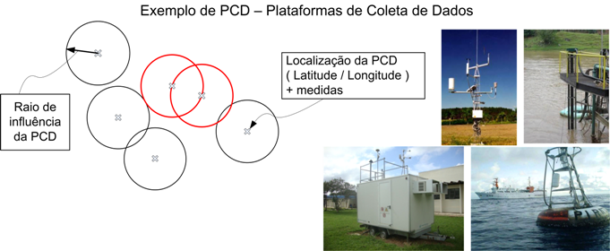
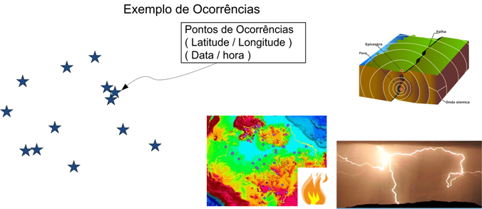
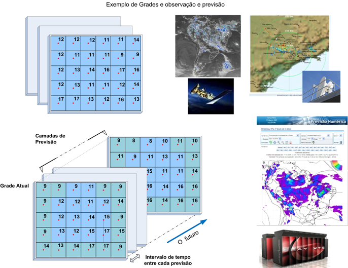
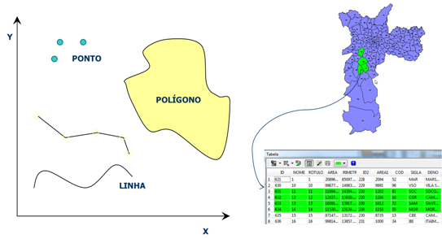
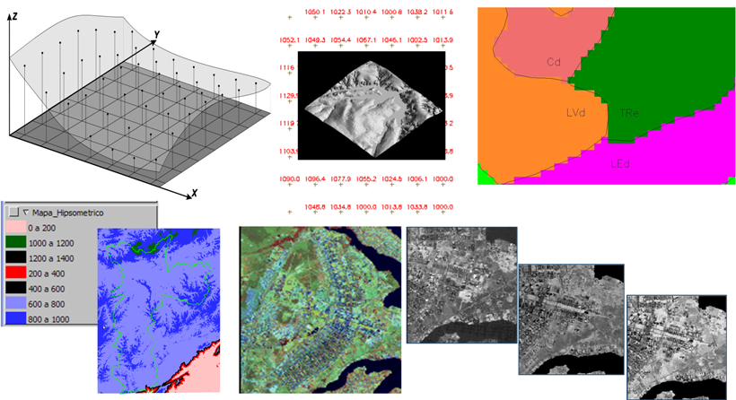

Dados e Formatos
Os dados que podem ser incorporados a base de dados de um projeto estão divididos em dinâmicos e estáticos, conforme descrito a seguir.
Manipulação de Dados Estáticos - Adição de Dados Estático 
Dados Dinâmicos
Dados dinâmicos podem ser agrupados em três tipos básicos: PCD, Ocorrências e Matriciais. Importante que estes dados estejam ajustados a um sistema de referência cartográfico conhecido, pois o metadado de projeção (SRID) será solicitado. Além disso, deverá informar qual o fuso horário de cada fonte de dados.
- PCD
PCD - Plataformas de Coleta de Dados são representados por instrumentos (sensores eletrônicos) instalados em pontos fixos no terreno, normalmente em locais que representam espacialmente bem as medidas que realizam. PCD´s podem ser utilizadas para medir propriedades do ar (CO2,O3, SO2, etc ), água (PH, turbidez, oxigênio dissolvido, etc), solo/rocha (permeabilidade, vibrações, etc) ou atmosfera (temperatura, pressão, chuva, etc) entre outras. Tais propriedades, normalmente são armazenadas na forma de tabelas (arquivos digitais) definindo um conjunto de atributos que serão lidos pela plataforma.
Tais medidas podem ser realizadas de forma manual ou automática. As medidas manuais exigem que um técnico vá ao local da PCD realizar a leitura e posteriormente inserir as leituras em um arquivo digital, de modo que a plataforma TerraMA2 possa ler tal arquivo. Já as PCD automáticas têm instrumentos para registrar e transferir os dados por diversas tecnologias como rádio, satélite, wifi, ou celular. Neste caso é comum um conjunto de arquivos digitais estarem disponíveis em servidores de dados para serem lidos pela plataforma.
A Figura 1.3 mostra exemplos de algumas PCDs e o raio de influência que poderá ser definido para uso nas análises (ver Capítulo 3). Ainda nessa figura, algumas fotos de diferentes instalações como uma estação meteorológica, sonda de qualidade da água, estação de qualidade do ar e uma bóia oceânica.

Figura 1.3 – Exemplo de PCD e fotos de diferentes instalações.
- Ocorrências
As ocorrências são representadas por pontos que ocorrem em diferentes locais no espaço e no tempo, por polígonos de diferentes formas/tamanhos em diferentes tempos, ou ainda por linhas de diferentes formas/comprimentos em diferentes tempos. Para ocorrência de pontos uma Latitude/Longitude é criada por alguma tecnologia que pode agregar ou não um conjunto de atributos associados (propriedades da ocorrência). Como exemplo, um sistema de antenas que detectam a localização de descargas elétricas na atmosfera, ou um sistema com sismógrafos que registram a localização de abalos sísmicos no subsolo, ou ainda um conjunto de imagens de satélite com sensores no infra-vermelho que registram focos de calor (queimadas), onde os pontos das imagens (centro dos “pixels”) são extraídos e inseridos em arquivos para serem utilizados (ver projeto de Queimadas do INPE - https://queimadas.dgi.inpe.br ).
A Figura 1.4 mostra um exemplo de algumas ocorrências. Algumas fotos de diferentes tipo de ocorrências como focos de calor, descargas elétricas e abalos sísmicos.

Figura 1.4 – Exemplos de ocorrências.
Ocorrências na forma de polígonos podem ser obtidos por exemplo a partir de áreas identificadas como derramamentos de óleo no oceano em diferentes datas, ou ainda diferentes eventos de áreas identificadas como queimadas.
- Matriciais

Os dados matriciais são representados por grades retangulares com diferentes resoluções espaciais (tamanho do elemento ou “pixels” no terreno), tamanhos (número de linhas x colunas), quantizações (número de bits para cada elemento da grade), tipo (matrizes de inteiros ou ponto flutuante) e número de camadas (ou bandas). Tais dados podem ser obtidos por equipamentos como radares meteorológicos, por sensores remotos como satélites ou aerotransportado, ou ainda por técnicas computacionais como interpolação de modelos numéricos de tempo.
Na prática tais dados podem ser classificados como observacionais ou de previsão. Os dados observacionais refletem alguma propriedade do meio ambiente obtida para a situação atual e o seu passado, por exemplo, uma grade de precipitação. Os dados de previsão são obtidos por modelos matemáticos que quando executados, um conjunto de variáveis são calculadas ou estimadas a partir do horário atual e o futuro (algumas horas, dias ou até meses).
Veremos que os dados de observação estão disponíveis em arquivos (grades) obtidos ao passar do tempo e neste caso um conjunto de operadores da plataforma estão disponíveis para processar o último dado coletado e seu passado. Já os dados de previsão um conjunto de arquivos empilhados (grades multidimensionais) representam a hora atual e o futuro, e neste caso, outro conjunto de operadores estarão disponíveis.
A Figura 1.5 mostra exemplos de algumas grades de observação como imagens de satélite ou radar e um arquivo de previsão contendo várias camadas ou horários de uma variável prevista por um supercomputador.

Dados Estáticos
Dados estáticos podem ser agrupados em dois tipos básicos: Vetoriais e Matriciais. Para utilizar estes dados na plataforma é importante que os mesmos estejam geograficamente ajustados a um sistema de referência cartográfico. Portanto, utilize um Sistema de Informações Geográficas (SIG) para fazer os ajustes que foram necessários para depois utilizar seus mapas na TerraMA2.
- Vetoriais
Nos dados estáticos vetoriais a representação de um elemento ou objeto do espaço geográfico é uma tentativa de reproduzi-lo o mais exatamente possível. Qualquer entidade ou elemento gráfico de um mapa é reduzido a três formas básicas: pontos, linhas, áreas ou polígonos. Mapas com estas representações normalmente têm um conjunto de atributos associados na forma de tabelas. A Figura 1.6 mostra três formas básicas da representação vetorial e um mapa de polígonos associado a sua tabela de atributos. Veremos que um mapa desse tipo poderá ser utilizado em análises e receberá a denominação de objeto monitorado.

Figura 1.6 – Representação vetorial e exemplo de polígonos com atributos.
- Matriciais
Dados matriciais estáticos têm uma representação que consiste no uso de uma malha quadriculada regular sobre a qual se constrói, célula a célula, o elemento que está sendo representado. A cada célula, atribui-se um código referente ao atributo estudado, de tal forma que o computador saiba a que elemento ou objeto pertence determinada célula.
A Figura 1.7 mostra a representação matricial de uma grade retangular. Os valores da grade podem assumir diferentes quantizações, isto é, matriz de inteiros positivos, reais ou índice associados a uma tabela de cores.

Figura 1.7 – Representação matricial de dados estáticos.
Quadro Resumo
O quadro abaixo resume os tipos, representações e formatos disponíveis para serem utilizados pela plataforma.
Tipo |
Representação |
Formatos de coleta |
Formatos de armazenamento |
|
DINÂMICO |
PCD |
Ponto |
CSV genérico TOA5, INPE, PostGIS |
Tabelas PostGIS |
Ocorrência |
Ponto, linha ou polígonos |
CSV genérico, INPE, Elat, PostGIS ou Shapefile |
Tabelas PostGIS |
|
Matriz multidimensional |
Grade Retangular |
GRADs, GeoTIFF, Grib2, ASCII-grid, GDAL (demais formatos) |
GeoTIFF |
|
ESTÁTICO |
Vetoriais |
Ponto, linha ou Polígono |
- |
Shapefile ou Tabelas PostGIS |
Matriciais |
Grade Retangular |
- |
GeoTIFF |
Created with the Personal Edition of HelpNDoc: Create HTML Help, DOC, PDF and print manuals from 1 single source